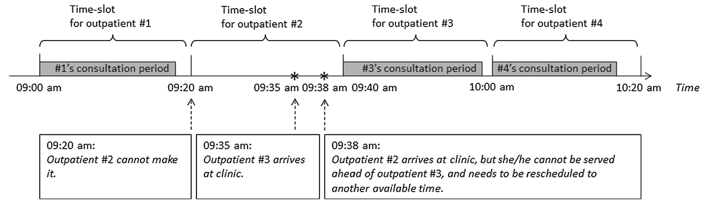
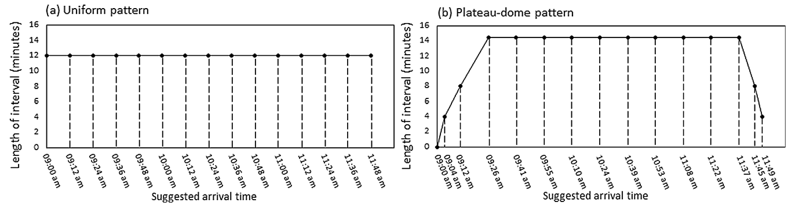

- 平均の待ち時間 15.3 分 → 11.8 分均等な目安の時刻と L1 の組み合わせに対して、plateau-dome と L3 の組み合わせ（論文 Table 1 の 16 の場面の平均）。
- 番号制では予約表が断片化しない医師は番号の順に診て、来ていない患者は飛ばす。時間枠制で遅刻が生む空きの代わりに、飛ばされた患者の扱いが問題になる。
- 患者は前回の経験で来院時刻を変える限定合理性と適応的期待の理論にもとづき、呼ばれた時刻と目安の時刻のずれを次の来院に反映させる。
時間枠制の予約では、希望の枠の割当と取消で予約表が断片化し、遅刻した患者の枠が空く
時間枠制の予約では、医師の診療時間を有限個の時間枠に分け、依頼に応じて割り当てる。論文はここで Lian ら（2010）を引き、患者の希望の枠を割り当てたり以前の予約を取り消したりすると予約表が断片化し、効率に限界が出ると述べる。

台湾の病院や診療所は番号制（sequence-number based）の予約を使う。予約を申し込んだ順に、番号と目安の来院時刻を渡す。医師は目安の時刻ではなく番号の順に診て、呼んだ患者が来ていなければ次の患者を呼ぶ。そのため予約表の断片化は起きず、遅刻や無断キャンセルで医師が空くこともない。代わりに、番号を飛ばされた患者をいつ診るか（遅刻への対応）が必要になる。たとえば「番号どおりの患者を 2 人診たら、飛ばされた患者を 1 人診る」という対応がよく使われる。
患者は過去の経験から目安の時刻をどう受け取るかを変える。番号を飛ばされないように早く来る患者が増えると、診療の始めに患者が集まる。飛ばされた経験のある患者は、診療の終わりに遅く来るかもしれない。著者らの知る限り、番号制と飛ばされた患者の扱いを論じた文献はない。
目安の来院時刻の決め方 2 つと、番号を飛ばされた患者の扱い 3 つを組み合わせて比べる
目安の来院時刻の決め方（appointment scheduling pattern）は次の 2 つである。

- A1 均等：どの予約の間も同じ間隔にする。多くの診療所で使われている。
- A2 plateau-dome：Klassen と Yoogalingam（2009）が示した形で、間隔が急に伸びて最大値でしばらく保ち、最後に短くなる。予約数・予約の長さ・費用・無断キャンセルの水準・診療の長さが変わっても頑健だとされる。
来た患者は 3 つに分ける。C1 は番号をまだ飛ばされていない患者、C2 は目安の時刻の範囲内に来たが番号を飛ばされていた患者、C3 は目安の時刻より遅れて来て番号を飛ばされた患者である。遅刻への対応（late arrival policy）は次の 3 つである。
- L1：C1 の列（番号順）と C2・C3 をまとめた列（来た順）を作り、C1 を 2 人診たら C2/C3 を 1 人診る。冒頭の「2 人に 1 人」の対応である。
- L2：C1 と C2 をまとめた列（番号順）と C3 の列（来た順）を作り、C1/C2 を 3 人診たら C3 を 1 人診る。時間どおりに来た C2 を C1 と同じ優先度で扱う。
- L3：C1、C2、C3 の 3 つの列を作り、C1 を 1 人、C2 を 2 人、C3 を 1 人の順で診る。列が空なら次の列の患者を診る。時間どおりに来た C2 の優先度を上げて埋め合わせる。
患者は、前回呼ばれた時刻と目安の時刻のずれを見て、次に来る時刻を更新する
\(t\) 回目の来院で、目安の時刻を \(R_t\)、医師が実際に呼んだ時刻を \(C_t\)、診察の開始時刻を \(S_t\)、患者が来たいと考える時刻を \(F_t\)、実際に来た時刻を \(A_t\) とする。\(p_t\) は \(F_t\) と \(R_t\) の差で、患者が目安の時刻をどれだけ信じているかを表す。適応的期待の理論（Cagan 1956）に従い、\(p_t\) を次のように更新する（式 1）。
\(\eta \in [0, 1]\) は前回までの行動をどれだけ保つかの重みで、大きいほど前回のずれに左右されず、同じ行動（早く来る、遅く来る）を続ける。\(\theta_t\) は呼ばれた時刻と目安の時刻のずれである。呼ばれたときに来ていた患者（C1）は \(\theta_t = S_t - R_t\) を直接知る（式 2）。番号を飛ばされた患者（C2・C3）は、来たときに診察中の番号 \(j_t\) と自分の番号 \(i_t\)、平均の診察時間 \(m_t\) からずれを見積もる（式 3）。
実際の到着 \(A_t\) は交通や個人の事情で \(F_t\) から平均 0、標準偏差 20 分の正規分布でずれる。待ち時間は、実際に来た時刻から診察が始まるまでの時間である。
シミュレーションでは 4 つのパラメータをそれぞれ 2 通りに変え、16 の場面を作った。診察時間の変動係数は \(1/\sqrt{10}\) と 1、診療は 3 時間で、平均の診察時間が 3 分または 9 分なので 1 回の患者数は 60 人または 20 人である。\(\eta\) は 0.8 と 0.2、来院の回数はガンマ分布で、慢性疾患の患者は形状 2・尺度 8、それ以外は形状 3・尺度 1 とした（台湾の統計データにもとづく）。各組み合わせを 10,000 回シミュレーションした。
plateau-dome の目安の時刻と 3 つの列を使う対応の組み合わせが、平均の待ち時間を最も短くした
| 目安の時刻 | L1 | L2 | L3 |
|---|---|---|---|
| A1 均等 | 15.3 | 13.9 | 13.3 |
| A2 plateau-dome | 13.0 | 12.3 | 11.8 |
表1 16 の場面を通した平均の待ち時間（分）（論文 Table 1 の最下行）。
場面ごとに見ると、患者が 60 人の場面では L3 がどちらの目安の時刻でも最も短い。たとえば \(\eta = 0.8\)、60 人、変動係数 1、非慢性の場面では、A1・L1 が 13.1 分、A2・L3 が 10.1 分だった。一方、患者が 20 人の場面では遅刻への対応による差は小さかった。
- A2 が効く理由：始めの間隔が短いので、最初の患者が来なくても医師はすぐ次の患者を診られ、始めの無断キャンセルや遅刻の影響を抑える。終わりの間隔が短いと、最後のほうの患者はやや遅めに来ることになり、医師が飛ばされた患者を診ている間に待たずに済む。
- L3 が効く理由：L1 では C2/C3 の列の後ろの患者が長く待つ。L2 では C3 の患者が長く待つ。L3 は 3 つの列に優先度をつけ、目安の時刻と番号の両方に患者の注意を向けさせる。
- 予想と違った結果：患者が少ない（20 人）ほうが待ち時間は長かった。1 人の診察が長いと、呼ばれる時刻を予想しにくいためと論文は説明する。前回の経験を強く反映する（\(\eta = 0.2\)）と待ち時間は長くなった。来院の多い慢性疾患の患者も待ち時間が長く、早く来る行動が固まるためとしている。
限界として、予約のない飛び込みの患者を扱っていないことを挙げ、その影響の分析を今後の課題としている。
Lian らの断片化を時間枠制の限界として引き、断片化の起きない番号制で待ち時間を減らす方策を比べた研究である
- Lian との関係：序論で Lian ら（2010）を引き、希望の枠の割当と取消による予約表の断片化を、時間枠制の本来の限界として挙げる。番号制はこの限界を持たない方式として位置づけられている。
- ほかの論文との関係：Yu ら（2019）はこの論文を参考文献に挙げている。
- 美容室の予約への示唆：時間枠制で遅刻や取消が空きを生む問題を、予約の方式そのものを変えて避けるという見方は、断片化の指標を考えるときの比較の基準になる。一方、番号制は診察時間が短く順番を入れ替えられる外来向けで、施術時間分の連続した枠を前もって押さえる美容室の予約には、そのままは当てはまらない。客が経験から来店時刻を変えるモデルは、遅刻や早着を含めたシミュレーションに使える。
@article{chen2019healthcare,
title = {Healthcare scheduling policies in a sequence-number based appointment system for outpatients' arrivals: Early, on time, or late?},
author = {Chen, Pei-Sheng and Hong, I-Hsuan and Hou, Yi and Shao, Yu-Chao},
journal = {Computers \& Industrial Engineering},
volume = {130},
pages = {298--308},
year = {2019},
doi = {10.1016/j.cie.2019.02.033}
}
ページの数値・式・記述は出版版の PDF（Elsevier）による。図1・図2 は論文の図を切り出したものである。書誌情報も同じ PDF から確認した。